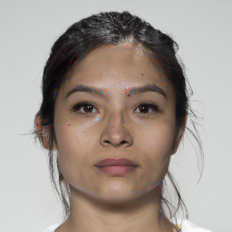
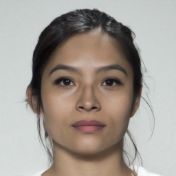
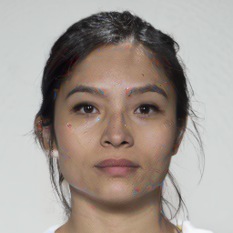
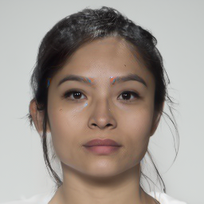
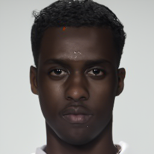
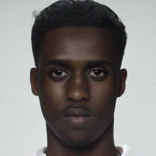
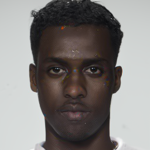
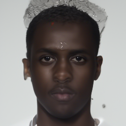

Greedy-DiM* is unreasonably effective
A morphing attack is multi-objective: the attack must fool every recognizer whilst keeping NFE low. The radar below plots all nine attacks against three FR systems (MMPMR at $\mathrm{FMR}=0.1\%$ against AdaFace, ArcFace, ElasticFace) and a compute-efficiency axis ($1-\mathrm{NFE}/2350$). The MMPMR axes are scaled from 65% to 100% in order to make the separation between attacks legible.
We observe that Greedy-DiM* (deep blue fill) is the only attack which saturates all three FR axes, i.e., achieves 100% MMPMR on every tested FR system, whilst remaining cheaper on compute than vanilla DiM-A. This is achieved at only 270 NFEs — fewer than DiM-A, and an order of magnitude below Morph-PIPE's 2350.
| Attack | NFE ↓ | AdaFace ↑ | ArcFace ↑ | ElasticFace ↑ |
|---|---|---|---|---|
| FaceMorpher (landmark) | — | 89.78 | 87.73 | 89.57 |
| Webmorph (landmark) | — | 97.96 | 96.93 | 98.36 |
| OpenCV (landmark) | — | 94.48 | 92.43 | 94.27 |
| MIPGAN-II (GAN) | 150 | 70.55 | 72.19 | 65.24 |
| Morph-PIPE | 2350 | 95.91 | 92.84 | 95.50 |
| DiM-A | 350 | 92.23 | 90.18 | 93.05 |
| Fast-DiM-ode | 150 | 91.82 | 88.75 | 91.21 |
| Greedy-DiM-S | 350 | 95.71 | 93.87 | 95.30 |
| Greedy-DiM* (ours) | 270 | 100 | 100 | 100 |
Numbers from Table 4 of Greedy-DiM (Blasingame & Liu, IJCB 2024). Landmark methods carry no diffusion compute (NFE listed as —); MIPGAN‑II at 150. To the best of our knowledge, Greedy-DiM* is the first representation-based attack to consistently outperform landmark methods.
Morphing Attack Potential
Whilst MMPMR averages over identities, the Morphing Attack Potential metric (MAP) reports the fraction of morphs which simultaneously fool $c$ FR systems — the appropriate metric for deployments in which a single morph might be presented to multiple recognizers. We observe that Greedy-DiM* attains 100% in every column.
| Attack | NFE | $\geq 1$ FR | $\geq 2$ FRs | $\geq 3$ FRs |
|---|---|---|---|---|
| FaceMorpher (landmark) | — | 92.23 | 89.57 | 85.28 |
| Webmorph (landmark) | — | 98.77 | 98.36 | 96.11 |
| OpenCV (landmark) | — | 97.55 | 93.87 | 89.78 |
| MIPGAN-II (GAN) | — | 80.37 | 69.73 | 57.87 |
| DiM-A | 350 | 96.93 | 92.43 | 86.09 |
| Fast-DiM-ode | 150 | 95.91 | 91.21 | 84.66 |
| Morph-PIPE | 2350 | 98.16 | 95.71 | 90.39 |
| Greedy-DiM-S (ours) | 350 | 97.34 | 95.71 | 91.82 |
| Greedy-DiM* (ours) | 270 | 100 | 100 | 100 |
$\mathrm{MAP}[1,c]$ at $\mathrm{FMR}=0.1\%$ on SYN-MAD 2022 / FRLL. Greedy-DiM* is the only attack — landmark or representation-based — that simultaneously fools all three modern FR systems on every test pair. Landmark and GAN baselines plot at NFE=0 (saturating the compute axis); diffusion methods plot at their actual NFE.
Two FRLL identity pairs through five DiM-family morphing pipelines. Greedy-DiM* sits in the dead-center column — the single image each result in this section refers to — with the four baselines flanking it.
baseline
fewer NFEs
ours
21-blend search
1D greedy
 Bona fide
Bona fide DiM-A
DiM-A
Fast-DiM
Greedy-DiM*
Morph-PIPE
Greedy-DiM-S DiM-A
DiM-A
Fast-DiM
Greedy-DiM*
Morph-PIPE
Greedy-DiM-S Bona fide
Bona fide